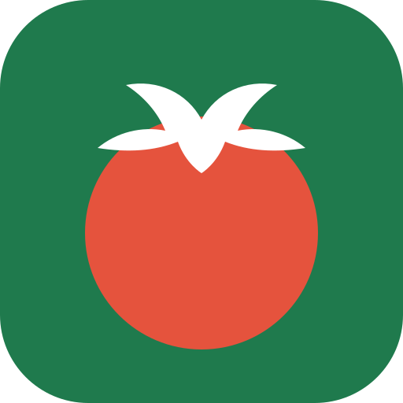

Dirección de la PC con XAMPP (la misma red Wi-Fi que el teléfono).
Deja la cámara vacía con el LED encendido y presiona el botón. Las siguientes lecturas serán la referencia para saber cuándo hay un jitomate.